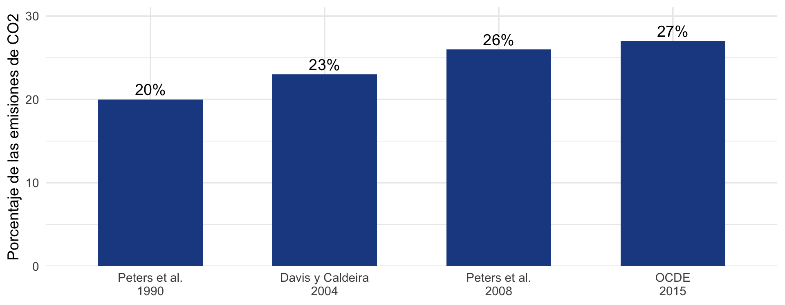
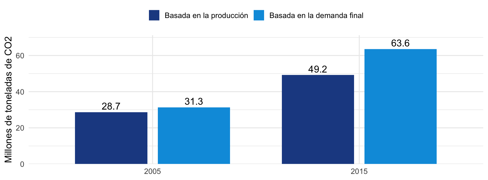

Temas a tratar
- La idea: de quién son las emisiones de lo que consumimos.
- Cómo se calcula una huella de carbono nacional.
- Qué dicen los datos globales y de América Latina.
- Qué han hecho otros países y qué aprendemos.
- El contexto de la misión en Perú.
Qué son, cómo se calculan y qué han hecho otros países
Economista / Consultor FMI
Una laptop comprada en Lima genera emisiones en muchos lugares y momentos:
flowchart LR A["Minería de metales"] --> B["Fábrica en el exterior"] B --> C["Transporte marítimo y aéreo"] C --> D["Tienda en Lima"] D --> E["Hogar peruano"]
Un inventario cuenta cada emisión en el país donde ocurre. Una huella de carbono las asigna al país de quien compra el producto: aquí, Perú.

Entre una quinta parte y más de una cuarta parte de las emisiones mundiales de CO2 se asocia con bienes que cruzan fronteras. Son estudios con bases distintas, no una serie homogénea (Davis y Caldeira, 2010; Peters et al., 2011; Yamano y Guilhoto, 2020).
Si un país reduce sus emisiones territoriales porque trasladó una fábrica al exterior, las emisiones no desaparecen: regresan en forma de importaciones.
Este fenómeno se llama fuga de carbono y es uno de los motivos por los que la OCDE compara las emisiones de producción con las de consumo (Yamano y Guilhoto, 2020).
La huella permite ver esa parte que un inventario no muestra.
| Enfoque | ¿Qué país se queda con la emisión? | Ejemplo: la laptop | Fuente típica |
|---|---|---|---|
| Territorial | Donde ocurre | País de la fábrica | Inventarios de la CMNUCC |
| Producción (residencia) | De la industria o el hogar residente que emite | País de la empresa que opera la fábrica | Cuentas de emisiones (SEEA) |
| Demanda final (huella) | De quien consume, invierte o exporta | País del comprador | Cuentas de emisiones y tablas de insumo-producto |
Fuente: (Yamano y Guilhoto, 2020).
Una aerolínea residente en Irlanda opera un vuelo entre Fráncfort y Nueva York.
El inventario territorial no lo cuenta en Irlanda, porque el vuelo no ocurre allí. La cuenta de emisiones sí, porque la utilidad del vuelo contribuye al PIB de Irlanda (Eurostat, 2015).
La diferencia entre ambos totales se muestra en las llamadas partidas puente. El transporte internacional es su fuente principal.
Insertar la Figura 3 del manual de Eurostat (2015), “Geographic and economic (resident) definition of a country” (sección 2.2.2).
De producto u organización
Mide las emisiones de una empresa o de un producto a lo largo de su vida útil. Usa el análisis de ciclo de vida y referencias como el GHG Protocol, la PAS 2050 o las normas ISO 14040 y 14044 (Frohmann y Olmos, 2013).
Nacional
Mide las emisiones asociadas con la demanda final de todo un país, con las tablas de insumo-producto. Es la que publican las oficinas de estadística, como la del Reino Unido (Department for Environment, Food and Rural Affairs, 2026).
Esta presentación trata de la segunda.
flowchart LR A["Cuadros de oferta y utilización"] --> D["Modelo de insumo-producto"] B["Cuentas de emisiones atmosféricas"] --> D C["Importaciones: base multirregional o supuesto"] --> D D --> E["Huella por producto y por categoría de demanda"]
Las cuentas de emisiones usan las mismas clasificaciones que las cuentas nacionales. Por eso las emisiones de una industria pueden compararse con su producción (Eurostat, 2015; United Nations, 2014).
Se divide lo que emite cada industria entre lo que produce. El resultado es su coeficiente de emisión: las emisiones por cada unidad de producto.
Una central eléctrica a carbón tendrá un coeficiente alto; una oficina de servicios, uno bajo.
Este coeficiente solo recoge las emisiones directas. Falta lo que emiten los proveedores.
Producir un televisor requiere acero, plástico y electricidad. El acero requiere mineral y energía. La energía requiere combustibles.
El modelo de insumo-producto suma todas esas rondas de producción (Miller y Blair, 2022). Así, la emisión del acero que está dentro del televisor se le atribuye al televisor.
El resultado es, para cada producto, las emisiones totales (directas e indirectas) por unidad demandada.
Se toma la demanda final de cada producto (lo que compran los hogares y el gobierno, lo que se invierte y lo que se exporta) y se multiplica por sus emisiones totales por unidad.
A eso se suman las emisiones directas de los hogares, como el combustible del auto o la cocina.
La suma es la huella de carbono. Si se separa por categoría de demanda, se ve cuánto se debe al consumo, a la inversión y a las exportaciones (Eurostat, 2015; Yamano y Guilhoto, 2020).
La notación matricial de estos tres pasos se desarrolla en las presentaciones 02 a 04.
| Supuesto de tecnología doméstica | Tabla multirregional | |
|---|---|---|
| Idea | Los bienes importados se producen como en casa | Cada país y cada industria de la cadena tiene sus propias emisiones |
| Qué mide | Las emisiones que se evitarían si el país produjera lo que importa | Las emisiones incorporadas en las importaciones |
| Costo | Bajo: usa la tabla nacional | Alto: exige una base externa o mucha información |
Fuente: (Eurostat, 2015).
Preguntas planteadas en (Eurostat, 2015; Yamano y Guilhoto, 2020).
Insertar miniatura de la portada de Yamano y Guilhoto (2020), OECD Science, Technology and Industry Working Papers 2020/11. Disponible en https://doi.org/10.1787/8f2963b8-en.
Estima las emisiones incorporadas en la demanda final y en el comercio bruto de 65 economías entre 2005 y 2015, con las tablas ICIO y las estadísticas de combustión de la AIE. Separa los enfoques territorial, de producción y de demanda final, y asigna a los residentes el combustible que compran en el exterior. En 2015, cerca de 27% del CO2 de combustión mundial estuvo ligado al comercio internacional.

En 2015, el CO2 de combustión asociado con el consumo peruano superó en 14.4 Mt al emitido por su producción. Entre 2005 y 2015, la producción creció 71% y la huella, 103% (Yamano y Guilhoto, 2020).
Cómo leerlo: de cada 100 toneladas asociadas con el consumo de un país, cuántas se emitieron fuera de sus fronteras (Yamano y Guilhoto, 2020).
Insertar miniatura de la publicación estadística “UK and England’s carbon footprint to 2023” (Defra). Disponible en https://www.gov.uk/government/statistics/uks-carbon-footprint.
El Departamento de Medio Ambiente del Reino Unido (Defra) publica cada año, desde 2012, la huella de carbono del país y de Inglaterra.
En la edición más reciente, la huella de 2023 fue de 699 millones de toneladas de CO2 equivalente. Eso es 4% menos que en 2022 y cerca de 10 toneladas por persona. Más de la mitad proviene de bienes importados.
La serie muestra por qué conviene mirar ambos enfoques: entre 1996 y 2023 la huella cayó 15%, pero las emisiones territoriales cayeron 50%. La razón es que las emisiones asociadas con importaciones subieron 43% en ese período, mientras que las de bienes producidos y consumidos dentro del país bajaron 49%.
Cómo lo hacen
Qué problemas reconocen
Fuente: (Owen, 2026).
Insertar miniatura de la portada del Manual for air emissions accounts, edición 2015 (Eurostat). Disponible en https://doi.org/10.2785/527552.
El manual de Eurostat es la guía que usan los países europeos para armar sus cuentas de emisiones. Explica el principio de residencia, cómo conciliar las cuentas con los inventarios mediante las partidas puente, y por qué se necesita el desglose completo por actividad económica para poder estimar huellas.
A partir de esas cuentas, Eurostat publica huellas de gases de efecto invernadero para 2010 a 2023, calculadas con la base FIGARO y con 64 ramas de actividad.
Como referencia, el manual señala que en 2011 el uso final de los residentes de la UE-27 implicó 7.8 toneladas de CO2 por habitante, emitidas dentro y fuera de la región.
| Base | Cobertura | Acceso | Para América Latina |
|---|---|---|---|
| OCDE: ICIO y huellas (OECD, 2025) | 1995 a 2022; incluye Perú, Chile, Colombia, Costa Rica, México, Brasil y Argentina | Datos abiertos | Buena cobertura |
| EXIOBASE 3 (Stadler et al., 2018) | 44 países y 5 regiones | Licencia abierta | Perú no es economía individual |
| Eora (Eora Global Supply Chain Database, 2026) | 190 países | Gratuita solo para uso académico | Verificar licencia para publicar |
En la región, las huellas nacionales y de hogares provienen sobre todo de la academia y de organismos multilaterales.
No se identificaron estadísticas oficiales de huella de carbono con acceso abierto verificable en los institutos de estadística de la región.
Casi todos los estudios combinan tres piezas: una tabla de insumo-producto (nacional o multirregional), un inventario de emisiones y una encuesta de gasto de los hogares.
Las siguientes diapositivas resumen los más útiles.
Insertar miniatura del artículo de Malerba et al. (2024), Energy Policy 192, 114246. Disponible en https://doi.org/10.1016/j.enpol.2024.114246.
Los autores estiman cuántas emisiones provoca el consumo de los hogares peruanos en 2004, 2007 y 2011. Para eso toman lo que cada hogar gasta, según la encuesta ENAHO, y lo multiplican por las emisiones de cada sector, calculadas con la base multirregional GTAP 9.
En sus resultados, la huella de los hogares crece con el tiempo, y más rápido en los más pobres: hasta casi 60% en los tres primeros deciles. También simulan un impuesto de 50 dólares por tonelada de CO2: elevaría la pobreza entre 0.8 y 1.1 puntos porcentuales, según el año.
Una dificultad que reconocen: no pudieron usar una tabla de correspondencia entre el gasto y los sectores, por falta de detalle en la información oficial.
Insertar miniatura del artículo de Román-Collado et al. (2021), Environmental Science and Pollution Research 28. Disponible en https://doi.org/10.1007/s11356-021-14521-1.
Los autores calculan la huella de Ecuador entre 2000 y 2015 a través de Eora26, una base multirregional abierta con 26 sectores y 187 países.
En sus resultados, la huella del país creció 145% en esos años. Las emisiones incorporadas en las importaciones pasaron de 4,514 a 12,183 gigagramos de CO2, y el saldo comercial de emisiones cambió de superávit a déficit: Ecuador pasó a importar más emisiones de las que exporta.
Las cifras provienen de la versión preliminar del artículo.
Insertar miniatura del artículo de Zhong et al. (2020), Journal of Environmental Management 273, 110979. Disponible en https://doi.org/10.1016/j.jenvman.2020.110979.
Los autores estiman la huella de diez países de la región, entre ellos Perú, combinando la base GTAP v10 para 2014 con los patrones de consumo por nivel de ingreso de la Base de Datos Global de Consumo del Banco Mundial.
En sus resultados, la huella promedio por persona va de 0.53 toneladas de CO2 equivalente en Honduras a 2.21 en México. Dentro de cada país la brecha también es grande: el 10% de mayores ingresos explica 29.1% de la huella regional.
Colombia. Hernández (2021) usa los cuadros de oferta y utilización de 2012 del DANE, convertidos a una tabla de 61 sectores, para calcular cuánto contribuye cada sector a las emisiones. Su trabajo central fue construir la correspondencia entre el inventario del IDEAM y las cuentas nacionales. No es una huella por demanda final, porque deja fuera las importaciones.
México. Renner (2018) combina tablas WIOD con la encuesta de gasto ENIGH 2014 para estimar cómo afectaría un impuesto al carbono a los hogares. Reconoce una limitación: la tabla es de 2014, pero las emisiones llegan solo hasta 2009. Los años de cada fuente deben coincidir.
Brasil. Cachola y Pacca (2021) cruzan la matriz de IBGE de 2010, el inventario WIOD de 2009 y la encuesta de gasto POF 2008-09. Encuentran que los hogares de mayores ingresos emiten unas 12 veces más que los de menores ingresos. Su mayor dificultad fue hacer corresponder las clasificaciones de actividades de ambas fuentes.
| Fecha | Hito |
|---|---|
| Marzo de 2023 | Se lanza el programa FMI y SECO de estadísticas ambientales y de cambio climático |
| Julio de 2023 | Misión diagnóstica: tres prioridades, entre ellas las huellas de carbono domésticas |
| Febrero de 2024 | Taller de capacitación en Chiba con personal del INEI y del MINEM |
| Mayo de 2024 | Misión de asistencia técnica: inicia la compilación de las cuentas |
| Febrero de 2025 | Misión de revisión de las cuentas de 2019 y de los ajustes por residencia |
| Abril de 2025 | Meta de publicación experimental de las cuentas de 2019 |
Fuentes: (Rivas y Gomes, 2025; Stanger y Guilhoto, 2024).
Las misiones del FMI señalaron cuatro usos (Rivas y Gomes, 2025; Stanger y Guilhoto, 2024):
| Insumo | Estado |
|---|---|
| Cuadros de oferta y utilización | INEI; anuales de 2007 a 2021, 101 industrias y 365 productos; cambio a la base 2019 en curso |
| Inventario de gases de efecto invernadero | MINAM; último año 2019; difundido por INFOCARBONO |
| Balance nacional de energía | MINEM; último año 2021; siete industrias y siete grupos de productos; solo en PDF |
| Cuentas físicas de energía y emisiones 2019 | INEI; versión experimental con ajustes por residencia |
| Encuesta de hogares | ENAHO; necesaria para huellas por hogar |
Fuentes: (Rivas y Gomes, 2025; Stanger y Guilhoto, 2024).
| Problema | Por qué ocurre |
|---|---|
| Agregación de las fuentes | El balance de energía y el inventario tienen menos detalle que las cuentas nacionales (Rivas y Gomes, 2025) |
| Concordancias | De los 34 flujos de la AIE, 11 se relacionan con varias industrias (Yamano y Guilhoto, 2020) |
| Residencia | Transporte, pesca, turismo y ductos exigen fuentes externas (Rivas y Gomes, 2025) |
| Importaciones | Supuesto de tecnología doméstica o base multirregional (Eurostat, 2015) |
| Años de referencia | Tablas, inventario y balance de años distintos (Renner, 2018) |
| Coordinación | Datos dispersos y sin protocolo formal de intercambio (Stanger y Guilhoto, 2024) |
Contexto de las huellas de carbono